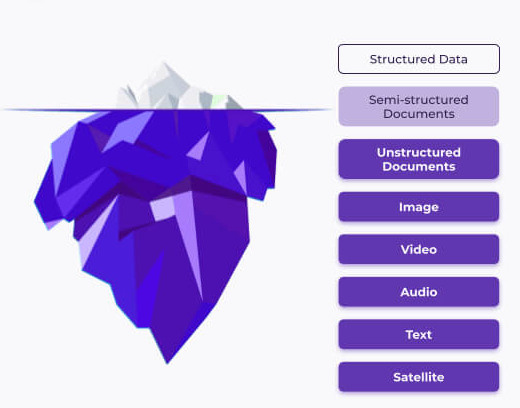
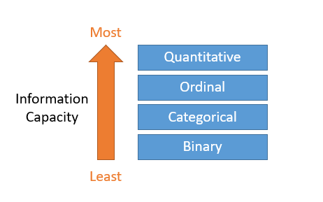
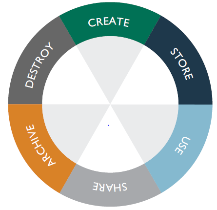

Organizational data should be properly labeled, and a
classification system implemented before data can be protected. A security
practitioner cannot protect critical or sensitive data if no distinctions exist
between the information within an organization. There are various approaches such as
NIST SP 800-60—Guide for Mapping Types of Information and Information Systems to
Security Categories and ISO 27001 (i.e., A5.12 Classification of
Information and A5.13 Labeling of Information) for implementing an information
classification system. Through classification, organizations can facilitate
compliance and ensure data is adequately protected.
Sensitivity marking and labeling can go a long way, helping
organizations comply with the handling requirements of different data types. Data
may be structured, unstructured, or even semistructured. Sensitive data must be
protected regardless of its structuring throughout its life cycle.
Objectives
Describe data governance and ownership.
Describe data classification and security labeling and marking.
Recognize structured and unstructured data types.
Describe the data life cycle.
Overview
Data governance requires the establishment of an effective
information classification process and the definition/specification of roles and
responsibilities. Policy and procedures must be established for classifying
organizational data/information based on its level of sensitivity, value, and
mission criticality.
Data Governance
Management and protection of an organization’s information
assets requires a system. As described by the Data Governance Institute, “Data
Governance is a system of decision rights and accountabilities for
informationrelated processes, executed according to agreed-upon models which
describe who can take what actions with what information, and when, under what
circumstances, using what methods.”15
Data governance, as a collection of practices and processes for
managing data within the organization, may require:
A process to classify and categorize data based on defined criteria (e.g., data
sensitivity levels).
Clear definition and establishment of specific roles and corresponding
responsibilities for data owners, data custodians, and data users, among others.
The data classification process requires a
consistent approach to categorizing data based on criteria that are well thought
out, specific, and predefined. The classification of data helps determine what
baseline security controls are appropriate for safeguarding that data, which in turn
can help ensure data protection is done in the most cost-effective manner.
The classification process relies on the assumption that the
organization has a clear understanding of the data it has in its possession,
regardless of data format, and structured or unstructured. This may require the
organization to perform a discovery exercise to develop this understanding and
establish an inventory of data assets.
The modern enterprise has evolved into a giant producer and
consumer of data. Despite the large volume of controls and efforts to protect
various data types, few organizations can map exactly where their sensitive data is
located and what security controls are deployed to guard it.
Where data is dispersed, this can increase the risks and
potential vulnerabilities associated with data storage and management. For
organizations to adequately mitigate these risks, they should first locate data
types to understand and map where data resides, along with the type and content of
the data. This step is called data discovery.
Classification is the next step after data discovery.
Classification implies that data will be identified and understood according to
sensitivity, value, usefulness, age, or any other relevant criteria as determined by
the organization or by the applicable laws and regulations.
Proper data classification is essential to build effective data
controls, thus enabling compliance with relevant laws, regulations and standards,
and internal security policy.
The following are some examples of sensitivity categories for
different organizations.
Commercial businesses
Confidential
Private
Sensitive
Public
U.S. military
Top secret
Secret
Confidential
Sensitive but unclassified
Unclassified
U.S. government agencies
For internal use only
Confidential
Private
Sensitive
Public
A data classification policy and process should be used for
implementing data controls such as DLP and encryption. Data classification is also a
requirement in various regulations, standards, and information security frameworks.
Labeling
It is up to the organization to determine what classifications
it will use and what security measures are required for each level of data
classification. After classification, labeling and marking must be applied.
For each sensitivity classification, different handling
requirements and procedures must be specified pertaining to the access, usage, and
destruction of the data. For example, in a corporation, confidential information may
only be accessed by senior management and a select few people throughout the
company. To access the information, two or more may be required to enter their
access codes, the auditing can be detailed and monitored daily, and paper copies of
the information may be kept in a vault.
Secure data labeling and marking involves several different
aspects, including security policy, security classification, and data sensitivity.
The terms “security markings” and “security labels” are defined in NIST publications
as follows:
Security labels. This is the means used to associate a set of security
attributes with a specific information object as part of the data structure for
that object.
Security markings. This is the means used to associate a set of
security attributes with objects in a human-readable form that enables
organizational process-based enforcement of information security policies.
To distinguish between these two terms, think of marking hard
copies with the classifications, while labeling objects in IT systems.
Classifications are fundamental to many security services. For
example, data loss prevention systems may use classifications; intrusion detection
systems may use classifications; database management systems may associate
classifications with fields, records, tables, or other entities; and operating
systems may associate classifications with processes and users.
Labeling systems can help assess the sensitivity of the
information involved, which in turn can help apply the degree of protection that is
most appropriate for that type of information. Applying strong authentication,
strong cryptographic protection, tamper detection mechanisms, and other controls is
only valuable where such a level of protection is required. Ultimately, this can
help organizations achieve cost-effective security measures.
Data Ownership
Enterprises may take different approaches to the ownership of
the enterprise data. Possibilities include:
Assignment of data ownership to individuals or silos within the enterprise
Assignment of the data ownership to the enterprise
Regardless of the approach or the rationale, accountability must
be addressed for access management and compliance purposes.
Data Owner and Data Controller
Data ownersare typically business groups
within the enterprise, as opposed to technical teams. It is the data owner who falls
within the bounds of the due care responsibilities and who will be held responsible
for any negligent acts that result in corruption or disclosure of the data. Various
responsibilities are associated with data owners with respect to their data. A few
such responsibilities include:
Data classification
Determination of the retention requirements
Granting or denying subjects’ access requests
Delegation of the responsibility for day-to-day data maintenance to data
custodians
The data owner must classify the data based on classification
criteria such as the usefulness, value, or age of data. Classification could also be
based on the perceived impact of a breach in confidentiality, integrity, or
availability of the data. This would likely require a clear understanding of all
applicable laws, regulations, standards, and liabilities related to a breach.
Drawing upon the definitions used by the European Commission to
distinguish the roles related to data privacy and protection, the
term data controller is extensively used. The data controller determines the
purposes for which, and how, personal data is processed. As such, if your
company/organization decides why and how the personal data should be processed, the
company is the data controller. Employees processing personal data within your
organization do so to fulfill your tasks as data controller.
Data Custodian and Data
Processor
The data custodian is given the responsibility for the
maintenance and protection of the data. The data custodian is responsible for the
preservation of confidentiality, integrity and availability of the data in their
custody. As part of this, the data custodian’s general activities include performing
and restoring backups, implementing security mechanisms, and fulfilling requirements
specified in organizational security policies, standards, and guidelines.
In terms of software development, the data custodian role might
be slightly different and involve assurance of authorized access to data, sustaining
data integrity, versioning of data sets, and maintaining a history of changes.
Drawing upon the definitions used by the European Commission to
distinguish the roles related to data privacy and protection, the term data
processor is extensively used. The data processor processes personal data only on
behalf of the controller. The data processor is usually a third party external to
the company. However, in the case of groups of undertakings, one undertaking may act
as processor for another undertaking. The duties of the processor toward the
controller must be specified in a contract or another legal act. For example, the
contract must indicate what happens to the personal data once the contract is
terminated.
Data User
Data users are individuals who routinely use the data as part of
their work-related tasks. They require the level of access to the data necessary for
performing their duties and activities. Data users also have data security
responsibilities: they must follow operational security procedures to ensure the
confidentiality, integrity, and availability of the data.
Data Subject
The data subject is the individual that
personal data is about. In other words, a data subject is a person who can be
identified, directly or indirectly, by reference to an identification number or to
one or more factors specific to their physical, physiological, mental, economic,
cultural, or social identity (e.g., telephone number, IP address).
Types of Data
Not all data is equal. Data takes one of three general forms:
Structured data
Unstructured data
Semistructured data
Structured data types that are centrally managed allow better
control of enterprise data. They are often accessed and managed using a database or
repository such as Structured Query Language (SQL). Examples of structured data
include credit cards, names, addresses, and dates. Some data are structured but most
is not.
Most data are unstructured. Unstructured data does not have a
predefined data model or is not organized in a predefined manner and is, therefore,
difficult to process or analyze using conventional tools and methods. Modern NoSQL
(or “not only SQL”) data management tools may be used to access and manipulate these
types of data pools.
Semistructured data relies on metadata (e.g., JSON, CSV, XML) to
aid data cataloging and analysis.

Figure 3: Unstructured Data Processing
Additionally, data can also be defined based on information
capacity. Common information types include quantitative, ordinal, categorical, and
binary.
Quantitative. Numerical often continuous values.
Ordinal. Categorical feature where order is important (e.g., t-shirt
sizes).
Categorical. Discrete values such as binary but more than two
possibilities (e.g., Apple, Orange, Peach, Pear).
Binary. Two possible choices such as 1 or 0. Yes or No.

Figure 4: Information Capacity of Data
Data Life Cycle
Data must be managed with respect to the data life cycle. Data
must be adequately protected during each phase. The life cycle begins at the time of
data creation or acquisition and continues until the data has been properly
disposed. Concerns and considerations for the protection of data in each phase of
the life cycle vary pending storage, processing, or archived considerations. This
figure shows the full life cycle.

Figure 5: Data life cycle
Secure Data Retention, Retrieval, and
Destruction
Most categories of data processed for specific scopes and
purposes must be retained for a set amount of time. Organizations must understand
their obligations to meet applicable data retention and preservation requirements.
The same is true with respect to the destruction of data when it is no longer
needed, and sanitization of the media to address the risk of data remanence.
Data Retention
A data retention policy will establish a protocol for retaining
information for operational or regulatory compliance needs. The objectives of a data
retention policy are to keep important information for future use or reference, to
organize information so it can be searched and accessed later, and to dispose of
information that is no longer needed.
The policy balances the legal, regulatory, and business data
archival requirements against data storage costs, complexity and other data
considerations.
An organization must recognize and understand the applicable
retention requirements posed by various laws, regulations, and standards.
Protection of retained data must be assured through appropriate
safeguards and countermeasures (e.g., restricted access control and encryption).
Data Destruction
A key part of data protection procedures is safely disposing of
data once it is no longer needed. Failure to do so may result in data breaches
and/or compliance failures. Safe disposal procedures are designed to ensure that
there are no files, pointers, or data remanence left behind within a system that
could be used to restore the original data.
With respect to the data destruction requirements for each
classification, different techniques and approved tools for overwriting, purging, or
cryptographic erasure may be needed. For certain sensitivity classifications, the
physical destruction of the media (again, using appropriate tools and techniques)
may be the only acceptable method.
Security Models
Security models define rules of behavior for an information
system to enforce policies related to system security but typically involving
confidentiality and/or integrity policies of the system. Models define allowable
behavior for one or more aspects of system operation. When implemented in a system,
technology enforces the rules of behavior to ensure security goals (e.g.,
confidentiality, integrity) are met.
Confidentiality Models
Two confidentiality models, Bell-LaPadula (BLP) and Brewer and
Nash, are discussed below.
Bell-LaPadula
The Bell-LaPadula (BLP) model is intended to address
confidentiality in a multilevel security (MLS) system. It defines two primary
security constructs, subjects, and objects. Subjects are the active parties, while
objects are the passive parties. To help determine what subjects will be allowed to
do, they are assigned clearances that outline what modes of access (e.g., read,
write) they can use when they interact with objects.
The model system uses labels to keep track of clearances and
classifications and implements a set of rules to limit interactions between
different types of subjects and objects. It was an early security model and does not
provide a mechanism for a one-tone mapping of individual subjects and objects. This
also needs to be addressed by other models or features within a practical operating
system.
The model defines two properties, the ss-property and the
*-property.
Simple security property. A subject cannot read/access an object of a
higher classification (no read up).
Star property. A subject can only save an object at the same or higher
classification (no write down).
The model does not attempt to define technical constructs or
solutions. It merely identifies a high-level set of rules that if implemented
correctly, prevent the exposure or unauthorized disclosure of information in a
system processing different classification levels of data.
Brewer and Nash
This model focuses on preventing conflict of interest when a
given subject has access to objects with sensitive information associated with two
competing parties. The principle is that users should not access the confidential
information of both a client organization and one or more of its competitors. At the
beginning, subjects may access either set of objects. However, once a subject
accesses an object associated with one competitor, they are instantly prevented from
accessing any objects on the opposite side. This is intended to prevent the subject
from sharing information inappropriately between the two competitors even
unintentionally. It is called the Chinese Wall Model because, like the Great Wall of
China, once on one side of the wall, a person cannot get to the other side. It is an
unusual model in comparison with many of the others because the access control rules
change based on subject behavior.
Integrity Models
Two integrity models—Biba and Clark-Wilson—are discussed below.
Biba
The Biba model is designed to address data integrity and does
not address data confidentiality. Like Bell-LaPadula, Biba is also a lattice-based
model with multiple levels. It defines similar but slightly different modes of
access (e.g., observe, modify) and also describes interactions between subjects and
objects. Where Biba differs most obviously is that it is an integrity model; it
focuses on ensuring that the integrity of information is being maintained by
preventing corruption.
At the core of the model is a multilevel approach to integrity
designed to prevent unauthorized subjects from modifying objects. Access is
controlled to ensure that objects maintain their current state of integrity as
subjects interact with them. Instead of the confidentiality levels used by
Bell-LaPadula, Biba assigns integrity levels to subjects and objects depending on
how trustworthy they are considered to be. Like Bell-LaPadula, Biba considers the
same modes of access but with different results.
The model defines three properties, the ss-property and the
*-property as in BLP, but also includes a new property, the invocation property.
Simple Integrity property. A subject cannot observe an object of lower
integrity (no read down).
Star property. A subject cannot modify an object of higher integrity
(no write up).
Invocation property. A subject cannot send logical service requests to
an object of higher integrity.
Clark-Wilson
Biba only addresses one of three key integrity goals. The
Clark-Wilson model improves Biba by focusing on integrity at the transaction level
and addressing three major goals of integrity in a commercial environment. To
address the second goal of integrity, Clark and Wilson realized that they needed a
way to prevent authorized subjects from making undesirable changes. This required
that transactions by authorized subjects be evaluated by another party before they
were committed on the model system. This provides a separation of duties where the
powers of the authorized subject were limited by another subject given the power to
evaluate and complete the transaction.
To address internal consistency (or consistency within the model
system itself), Clark and Wilson recommended a strict definition of well-formed
transactions. In other words, the set of steps within any transaction would need to
be carefully designed and enforced. Any deviation from that expected path would
result in a failure of the transaction to ensure that the model system’s integrity
was not compromised. To control all subject and object interactions, Clark-Wilson
establishes a system of subject–program–object bindings such that the subject no
longer has direct access to the object. Instead, this is done through a program with
access to the object. This program arbitrates all access and ensures that every
interaction between subject and object follows a defined set of rules. The program
provides for subject authentication and identification and limits all access to
objects under its control.
Other Models
Two other models, Graham-Denning and Harrison, Ruzzo, Ullman
(HRU) are discussed below.
Graham-Denning
Graham-Denning is primarily concerned with how subjects and
objects are created, how subjects are assigned rights or privileges, and how
ownership of objects is managed. In other words, it is primarily concerned with how
a model system controls subjects and objects at a basic level where other models
simply assumed such control.
The Graham-Denning access control model has three parts: a set
of objects, a set of subjects, and a set of rights. The subjects are composed of two
things: a process and a domain. The domain is the set of constraints controlling how
subjects may access objects. Subjects may also be objects at specific times. The set
of rights govern how subjects may manipulate passive objects. This model describes
eight primitive protection rights called commands that subjects can execute to have
an effect on other subjects or objects.
The eight basic rules under Graham-Denning govern the following:
Secure object creation
Secure object deletion
Secure subject creation
Secure subject deletion
Secure provisioning of read access right
Secure provisioning of grant access right
Secure provisioning of delete access right
Secure provisioning of transfer access right
Harrison, Ruzzo, Ullman (HRU)
This model is like Graham-Denning, and it is composed of a set
of generic rights and a finite set of commands. It is also concerned with situations
in which a subject should be restricted from gaining particular privileges. To do
so, subjects are prevented from accessing programs, or subroutines, that can execute
a particular command (to grant read access for example) where necessary.
Modern Implementation
Most modern operating systems implement elements of security
models. They are not perfect implementations of the academic models and focus on
practical implementations that provide functionality consistent with one or more of
the security models. Precise implementation of the security models has practical
limitations and is rarely employed except in specialized systems with intentionally
limited functionality.
Data Classification Requirements (3.3)
Organizational data should be properly labeled, and a classification system implemented before data can be protected. A security practitioner cannot protect critical or sensitive data if no distinctions exist between the information within an organization. There are various approaches such as NIST SP 800-60—Guide for Mapping Types of Information and Information Systems to Security Categories and ISO 27001 (i.e., A5.12 Classification of Information and A5.13 Labeling of Information) for implementing an information classification system. Through classification, organizations can facilitate compliance and ensure data is adequately protected.
Sensitivity marking and labeling can go a long way, helping organizations comply with the handling requirements of different data types. Data may be structured, unstructured, or even semistructured. Sensitive data must be protected regardless of its structuring throughout its life cycle.
Objectives
Overview
Data governance requires the establishment of an effective information classification process and the definition/specification of roles and responsibilities. Policy and procedures must be established for classifying organizational data/information based on its level of sensitivity, value, and mission criticality.
Data Governance
Management and protection of an organization’s information assets requires a system. As described by the Data Governance Institute, “Data Governance is a system of decision rights and accountabilities for informationrelated processes, executed according to agreed-upon models which describe who can take what actions with what information, and when, under what circumstances, using what methods.”15
Data governance, as a collection of practices and processes for managing data within the organization, may require:
15 Data Governance Institute; “Definitions of Data Governance;” https://datagovernance.com/the-data-governance-basics/definitions-of-data-governance/; retrieved June 2023.
Data Classification
The data classification process requires a consistent approach to categorizing data based on criteria that are well thought out, specific, and predefined. The classification of data helps determine what baseline security controls are appropriate for safeguarding that data, which in turn can help ensure data protection is done in the most cost-effective manner.
The classification process relies on the assumption that the organization has a clear understanding of the data it has in its possession, regardless of data format, and structured or unstructured. This may require the organization to perform a discovery exercise to develop this understanding and establish an inventory of data assets.
The modern enterprise has evolved into a giant producer and consumer of data. Despite the large volume of controls and efforts to protect various data types, few organizations can map exactly where their sensitive data is located and what security controls are deployed to guard it.
Where data is dispersed, this can increase the risks and potential vulnerabilities associated with data storage and management. For organizations to adequately mitigate these risks, they should first locate data types to understand and map where data resides, along with the type and content of the data. This step is called data discovery.
Classification is the next step after data discovery. Classification implies that data will be identified and understood according to sensitivity, value, usefulness, age, or any other relevant criteria as determined by the organization or by the applicable laws and regulations.
Proper data classification is essential to build effective data controls, thus enabling compliance with relevant laws, regulations and standards, and internal security policy.
The following are some examples of sensitivity categories for different organizations.
A data classification policy and process should be used for implementing data controls such as DLP and encryption. Data classification is also a requirement in various regulations, standards, and information security frameworks.
Labeling
It is up to the organization to determine what classifications it will use and what security measures are required for each level of data classification. After classification, labeling and marking must be applied.
For each sensitivity classification, different handling requirements and procedures must be specified pertaining to the access, usage, and destruction of the data. For example, in a corporation, confidential information may only be accessed by senior management and a select few people throughout the company. To access the information, two or more may be required to enter their access codes, the auditing can be detailed and monitored daily, and paper copies of the information may be kept in a vault.
Secure data labeling and marking involves several different aspects, including security policy, security classification, and data sensitivity. The terms “security markings” and “security labels” are defined in NIST publications as follows:
To distinguish between these two terms, think of marking hard copies with the classifications, while labeling objects in IT systems.
Classifications are fundamental to many security services. For example, data loss prevention systems may use classifications; intrusion detection systems may use classifications; database management systems may associate classifications with fields, records, tables, or other entities; and operating systems may associate classifications with processes and users.
Labeling systems can help assess the sensitivity of the information involved, which in turn can help apply the degree of protection that is most appropriate for that type of information. Applying strong authentication, strong cryptographic protection, tamper detection mechanisms, and other controls is only valuable where such a level of protection is required. Ultimately, this can help organizations achieve cost-effective security measures.
Data Ownership
Enterprises may take different approaches to the ownership of the enterprise data. Possibilities include:
Regardless of the approach or the rationale, accountability must be addressed for access management and compliance purposes.
Data Owner and Data Controller
Data owners are typically business groups within the enterprise, as opposed to technical teams. It is the data owner who falls within the bounds of the due care responsibilities and who will be held responsible for any negligent acts that result in corruption or disclosure of the data. Various responsibilities are associated with data owners with respect to their data. A few such responsibilities include:
The data owner must classify the data based on classification criteria such as the usefulness, value, or age of data. Classification could also be based on the perceived impact of a breach in confidentiality, integrity, or availability of the data. This would likely require a clear understanding of all applicable laws, regulations, standards, and liabilities related to a breach.
Drawing upon the definitions used by the European Commission to distinguish the roles related to data privacy and protection, the term data controller is extensively used. The data controller determines the purposes for which, and how, personal data is processed. As such, if your company/organization decides why and how the personal data should be processed, the company is the data controller. Employees processing personal data within your organization do so to fulfill your tasks as data controller.
Data Custodian and Data Processor
The data custodian is given the responsibility for the maintenance and protection of the data. The data custodian is responsible for the preservation of confidentiality, integrity and availability of the data in their custody. As part of this, the data custodian’s general activities include performing and restoring backups, implementing security mechanisms, and fulfilling requirements specified in organizational security policies, standards, and guidelines.
In terms of software development, the data custodian role might be slightly different and involve assurance of authorized access to data, sustaining data integrity, versioning of data sets, and maintaining a history of changes.
Drawing upon the definitions used by the European Commission to distinguish the roles related to data privacy and protection, the term data processor is extensively used. The data processor processes personal data only on behalf of the controller. The data processor is usually a third party external to the company. However, in the case of groups of undertakings, one undertaking may act as processor for another undertaking. The duties of the processor toward the controller must be specified in a contract or another legal act. For example, the contract must indicate what happens to the personal data once the contract is terminated.
Data User
Data users are individuals who routinely use the data as part of their work-related tasks. They require the level of access to the data necessary for performing their duties and activities. Data users also have data security responsibilities: they must follow operational security procedures to ensure the confidentiality, integrity, and availability of the data.
Data Subject
The data subject is the individual that personal data is about. In other words, a data subject is a person who can be identified, directly or indirectly, by reference to an identification number or to one or more factors specific to their physical, physiological, mental, economic, cultural, or social identity (e.g., telephone number, IP address).
Types of Data
Not all data is equal. Data takes one of three general forms:
Structured data types that are centrally managed allow better control of enterprise data. They are often accessed and managed using a database or repository such as Structured Query Language (SQL). Examples of structured data include credit cards, names, addresses, and dates. Some data are structured but most is not.
Most data are unstructured. Unstructured data does not have a predefined data model or is not organized in a predefined manner and is, therefore, difficult to process or analyze using conventional tools and methods. Modern NoSQL (or “not only SQL”) data management tools may be used to access and manipulate these types of data pools.
Semistructured data relies on metadata (e.g., JSON, CSV, XML) to aid data cataloging and analysis.
Figure 3: Unstructured Data Processing
Additionally, data can also be defined based on information capacity. Common information types include quantitative, ordinal, categorical, and binary.
Figure 4: Information Capacity of Data
Data Life Cycle
Data must be managed with respect to the data life cycle. Data must be adequately protected during each phase. The life cycle begins at the time of data creation or acquisition and continues until the data has been properly disposed. Concerns and considerations for the protection of data in each phase of the life cycle vary pending storage, processing, or archived considerations. This figure shows the full life cycle.
Figure 5: Data life cycle
Secure Data Retention, Retrieval, and Destruction
Most categories of data processed for specific scopes and purposes must be retained for a set amount of time. Organizations must understand their obligations to meet applicable data retention and preservation requirements. The same is true with respect to the destruction of data when it is no longer needed, and sanitization of the media to address the risk of data remanence.
Data Retention
A data retention policy will establish a protocol for retaining information for operational or regulatory compliance needs. The objectives of a data retention policy are to keep important information for future use or reference, to organize information so it can be searched and accessed later, and to dispose of information that is no longer needed.
The policy balances the legal, regulatory, and business data archival requirements against data storage costs, complexity and other data considerations.
An organization must recognize and understand the applicable retention requirements posed by various laws, regulations, and standards.
Protection of retained data must be assured through appropriate safeguards and countermeasures (e.g., restricted access control and encryption).
Data Destruction
A key part of data protection procedures is safely disposing of data once it is no longer needed. Failure to do so may result in data breaches and/or compliance failures. Safe disposal procedures are designed to ensure that there are no files, pointers, or data remanence left behind within a system that could be used to restore the original data.
With respect to the data destruction requirements for each classification, different techniques and approved tools for overwriting, purging, or cryptographic erasure may be needed. For certain sensitivity classifications, the physical destruction of the media (again, using appropriate tools and techniques) may be the only acceptable method.
Security Models
Security models define rules of behavior for an information system to enforce policies related to system security but typically involving confidentiality and/or integrity policies of the system. Models define allowable behavior for one or more aspects of system operation. When implemented in a system, technology enforces the rules of behavior to ensure security goals (e.g., confidentiality, integrity) are met.
Confidentiality Models
Two confidentiality models, Bell-LaPadula (BLP) and Brewer and Nash, are discussed below.
Bell-LaPadula
The Bell-LaPadula (BLP) model is intended to address confidentiality in a multilevel security (MLS) system. It defines two primary security constructs, subjects, and objects. Subjects are the active parties, while objects are the passive parties. To help determine what subjects will be allowed to do, they are assigned clearances that outline what modes of access (e.g., read, write) they can use when they interact with objects.
The model system uses labels to keep track of clearances and classifications and implements a set of rules to limit interactions between different types of subjects and objects. It was an early security model and does not provide a mechanism for a one-tone mapping of individual subjects and objects. This also needs to be addressed by other models or features within a practical operating system.
The model defines two properties, the ss-property and the *-property.
The model does not attempt to define technical constructs or solutions. It merely identifies a high-level set of rules that if implemented correctly, prevent the exposure or unauthorized disclosure of information in a system processing different classification levels of data.
Brewer and Nash
This model focuses on preventing conflict of interest when a given subject has access to objects with sensitive information associated with two competing parties. The principle is that users should not access the confidential information of both a client organization and one or more of its competitors. At the beginning, subjects may access either set of objects. However, once a subject accesses an object associated with one competitor, they are instantly prevented from accessing any objects on the opposite side. This is intended to prevent the subject from sharing information inappropriately between the two competitors even unintentionally. It is called the Chinese Wall Model because, like the Great Wall of China, once on one side of the wall, a person cannot get to the other side. It is an unusual model in comparison with many of the others because the access control rules change based on subject behavior.
Integrity Models
Two integrity models—Biba and Clark-Wilson—are discussed below.
Biba
The Biba model is designed to address data integrity and does not address data confidentiality. Like Bell-LaPadula, Biba is also a lattice-based model with multiple levels. It defines similar but slightly different modes of access (e.g., observe, modify) and also describes interactions between subjects and objects. Where Biba differs most obviously is that it is an integrity model; it focuses on ensuring that the integrity of information is being maintained by preventing corruption.
At the core of the model is a multilevel approach to integrity designed to prevent unauthorized subjects from modifying objects. Access is controlled to ensure that objects maintain their current state of integrity as subjects interact with them. Instead of the confidentiality levels used by Bell-LaPadula, Biba assigns integrity levels to subjects and objects depending on how trustworthy they are considered to be. Like Bell-LaPadula, Biba considers the same modes of access but with different results.
The model defines three properties, the ss-property and the *-property as in BLP, but also includes a new property, the invocation property.
Clark-Wilson
Biba only addresses one of three key integrity goals. The Clark-Wilson model improves Biba by focusing on integrity at the transaction level and addressing three major goals of integrity in a commercial environment. To address the second goal of integrity, Clark and Wilson realized that they needed a way to prevent authorized subjects from making undesirable changes. This required that transactions by authorized subjects be evaluated by another party before they were committed on the model system. This provides a separation of duties where the powers of the authorized subject were limited by another subject given the power to evaluate and complete the transaction.
To address internal consistency (or consistency within the model system itself), Clark and Wilson recommended a strict definition of well-formed transactions. In other words, the set of steps within any transaction would need to be carefully designed and enforced. Any deviation from that expected path would result in a failure of the transaction to ensure that the model system’s integrity was not compromised. To control all subject and object interactions, Clark-Wilson establishes a system of subject–program–object bindings such that the subject no longer has direct access to the object. Instead, this is done through a program with access to the object. This program arbitrates all access and ensures that every interaction between subject and object follows a defined set of rules. The program provides for subject authentication and identification and limits all access to objects under its control.
Other Models
Two other models, Graham-Denning and Harrison, Ruzzo, Ullman (HRU) are discussed below.
Graham-Denning
Graham-Denning is primarily concerned with how subjects and objects are created, how subjects are assigned rights or privileges, and how ownership of objects is managed. In other words, it is primarily concerned with how a model system controls subjects and objects at a basic level where other models simply assumed such control.
The Graham-Denning access control model has three parts: a set of objects, a set of subjects, and a set of rights. The subjects are composed of two things: a process and a domain. The domain is the set of constraints controlling how subjects may access objects. Subjects may also be objects at specific times. The set of rights govern how subjects may manipulate passive objects. This model describes eight primitive protection rights called commands that subjects can execute to have an effect on other subjects or objects.
The eight basic rules under Graham-Denning govern the following:
Harrison, Ruzzo, Ullman (HRU)
This model is like Graham-Denning, and it is composed of a set of generic rights and a finite set of commands. It is also concerned with situations in which a subject should be restricted from gaining particular privileges. To do so, subjects are prevented from accessing programs, or subroutines, that can execute a particular command (to grant read access for example) where necessary.
Modern Implementation
Most modern operating systems implement elements of security models. They are not perfect implementations of the academic models and focus on practical implementations that provide functionality consistent with one or more of the security models. Precise implementation of the security models has practical limitations and is rarely employed except in specialized systems with intentionally limited functionality.